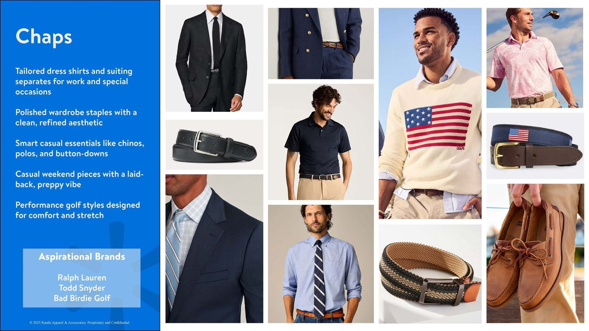
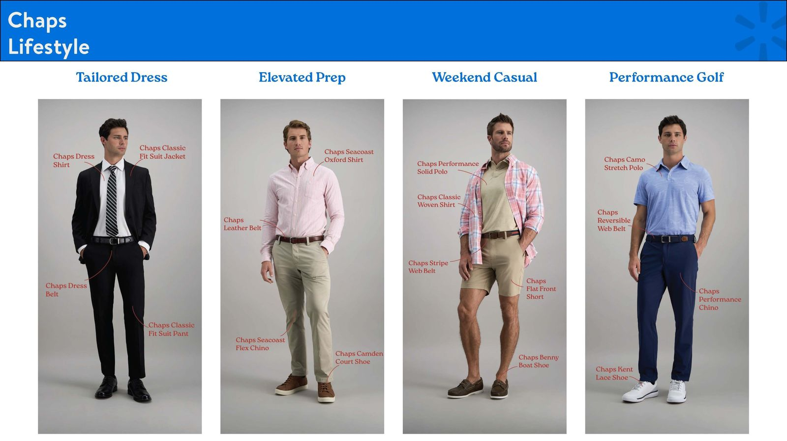

Building a Complete-the-Look Strategy for Walmart
Showing Walmart how men’s accessories could connect to its apparel, using store research, data and an original photo shoot.
A question from the buyers
Walmart came to us with a strategic question: how could they better connect their men’s accessories business with their national-brand and private-label apparel?
As the country’s largest retailer, Walmart wanted to know whether its assortment told a clear story or left gaps a competitor could fill. The brief was to review the existing brands, find the white space, and show how accessories could “complete the look” for a very broad customer base, reaching as many shoppers as possible without overlap.
Review
Walmart’s brands against our accessories.
Store visits
How product really sat on the shelf.
Online
The digital shopping experience.
Shoot
Walmart apparel styled with accessories.
Present
Adds and drops for the buying team.
Stores, shelves and data
As Design Director, I led the team through the analysis. We reviewed Walmart’s brand portfolio against the accessories we already made for them, walked stores to see how product actually sat on the shelf, and studied the online experience. Looking at both channels showed us where the assortment was crowded and where the gaps were.
1 / 3
Showing the outfit, not the item
Next we bought Walmart’s own private-label apparel and organized a photo shoot with models. We styled complete looks using a mix of current accessories and new designs, from budget basics to more trend-forward styles, with each look aimed at a different customer.


Data tells you where the gaps are. Creative shows you how to fill them.
On the assessment


1 / 15
Specific adds and drops
I built and led the final presentation, pairing the findings with images from the shoot. It made specific recommendations on what to drop and what to add, each one backed by market data and a styled example.
The recommendations went in two directions. We recommended decreasing some assortments that were repetitive, even though that meant giving up some sales for a few brands. And we recommended expanding other assortments that were missing key styles.
In front of the buying team
I presented to Walmart’s men’s accessories buyers and their design leadership. For each recommendation they could see the data behind it and the product styled on a model, side by side. It gave the team a clear path to a tighter, less redundant assortment, with accessories treated as part of the outfit for every customer segment.
The results of this project were wide ranging. It showed the scope and resources we put into a request from Walmart’s team, which helped make RAA an even stronger, more trusted partner.
It also gave Walmart the tools to make real decisions, and over time those decisions led to real change. Walmart has continued to evolve its private label business in a direction that aligns with our vision. That has built a stronger, more trusted relationship, added sales, and opened future opportunities in private label brands that Randa had not yet been selling into but eventually would.